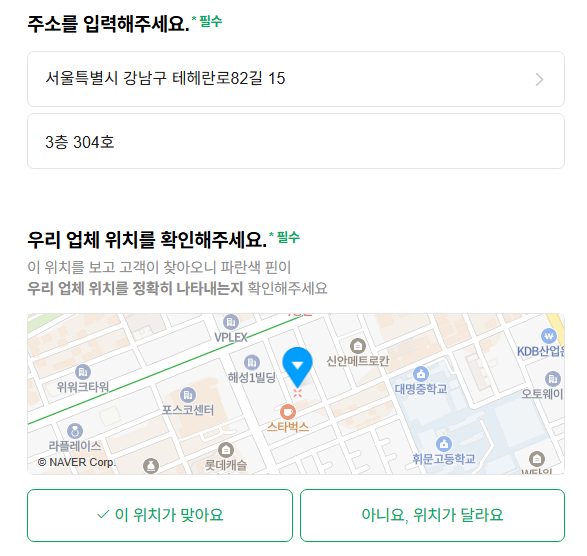
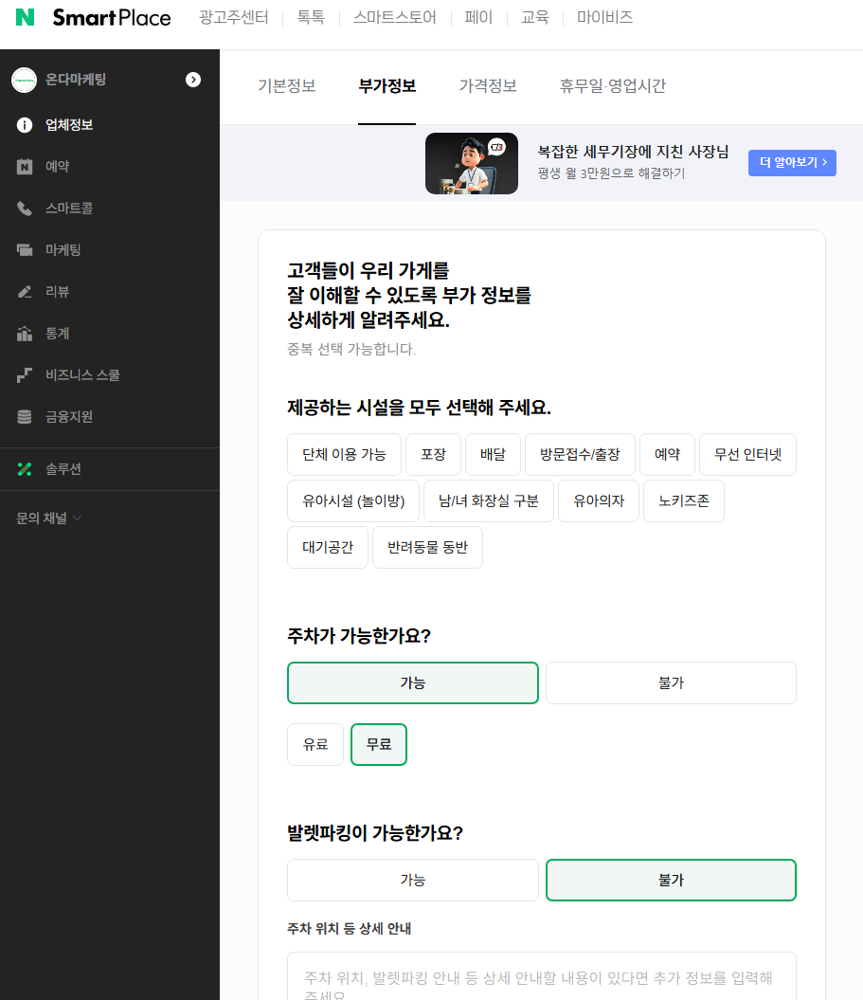
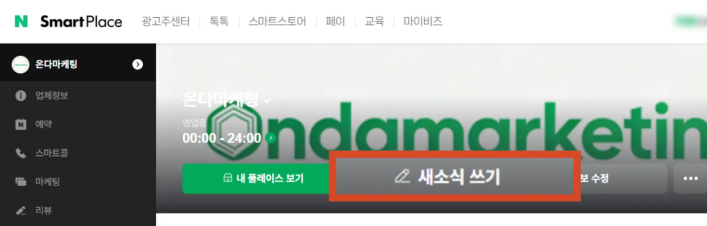
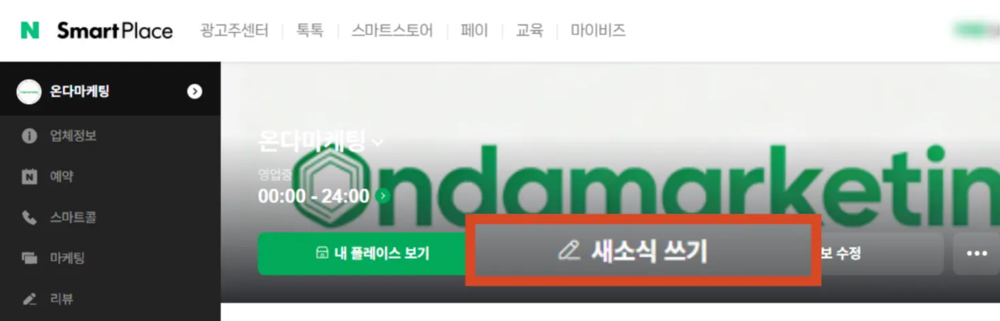

N플레이스 최적화 SEO 가이드북
기초가 부실하다면 모래성처럼 금방 무너지기 마련입니다.
네이버 알고리즘이 점수를 매기는 9가지 핵심 지표

| 그룹 | 항목 및 핵심 포인트 | 기대 효과 |
|---|---|---|
| STEP 1. 기초 탄탄 |
• 주소 풀 세팅: 도로명+지번 모두 기재 • 영업시간 디테일: 휴무/브레이크 타임 상세화 • 찾아오시는 길: 지명 키워드 기반 텍스트 최적화 |
정확도 점수 (검색 신뢰도 상승) |
| STEP 2. 점수 가점 |
• 스마트콜(0507): 통화 데이터 기록 및 지수화 • 네이버 톡톡: 1:1 상담을 통한 체류 시간 증대 • 소개글 SEO: 2,000자 내 타겟 키워드 전략 배치 |
활동성 점수 (지수 최적화) |
| STEP 3. 매출 직결 |
• 예약/주문(N페이): 네이버가 선호하는 결제 데이터 확보 • 소식/쿠폰: 알림받기 유도로 '저장' 및 '재방문' 트리거 • 최신성 유지: 월 1~2회 소식 발행으로 활성화 증명 |
전환 점수 (순위 상승 지름길) |
우리 매장 N플레이스 건강검진 시트

| 분류 | 최적화 체크리스트 | 자가 진단 |
|---|---|---|
| 기초 | 구주소(지번)와 신주소(도로명)를 모두 정확히 입력했는가? | □ |
| 기초 | 휴무일과 브레이크 타임을 분 단위까지 상세히 기재했는가? | □ |
| 기초 | '찾아오시는 길'에 주변 지명과 역 이름 등 키워드가 포함되었는가? | □ |
| 정보 | 소개글(상세설명)이 타겟 키워드를 포함해 1,000자 이상인가? | □ |
| 연결 | 스마트콜(0507) 번호를 발급받아 연결해두었는가? | □ |
| 연결 | 네이버 톡톡이 활성화되어 있으며 응대율이 높은가? | □ |
| 확산 | 네이버 예약 또는 주문(N페이) 기능을 실제 사용 중인가? | □ |
| 확산 | 최근 2주 이내에 새로운 '소식'을 업로드했는가? | □ |
| 유인 | '알림받기' 등 고객의 '저장'을 유도하는 쿠폰이 발행되어 있는가? | □ |
전문가가 알려주는 상위 노출 '치트키' 3가지

1. 소개글 : 네이버 AI가 좋아하는 '텍스트 마이닝'
네이버 AI는 이미지보다 텍스트로 업체 정보를 파악합니다. 단순한 "맛집"이 아니라 고객이 검색할 법한 구체적인 상황을 녹여내야 합니다.
전략 : "신내동 회식 장소", "봉화산역 데이트 코스", "주차 편한 고기집" 등 지역명과 상황 키워드 배치.
효과 : 체류 시간이 늘어나며 네이버로부터 "매력적인 매장"으로 인식되어 가산점을 받습니다.

2. 찾아오시는 길 : 로컬 타겟팅의 핵심
"OO빌딩 1층"처럼 간단히 작성하는 것 보단 주변 랜드마크를 활용해보세요.
전략 : "봉화산역 3번 출구 도보 1분", "중랑구청 인근", "신내동 우체국 맞은편" 등 주변 지명 명시.
효과 : '길찾기/네비게이션' 클릭을 유도합니다. 네이버는 이 클릭을 강력한 방문 의사로 판단하여 순위를 올립니다.
3. 스마트 블록 & 테마 검색 대비
네이버 AI는 소개글과 찾아오시는 길의 내용을 분석해 업체를 #분위기좋은, #가성비 같은 테마로 자동 분류합니다. 작성한 글에 전략 키워드가 포함되어 있는지 꼭 확인해보세요!

[필독] 사장님만 모르는 '대표 키워드'의 낭비
네이버 플레이스 설정의 '대표 키워드 5자리'는 상위 노출의 운명을 결정합니다. 하지만 대부분의 사장님은 이곳에 [강남 미용실], [강남 준오헤어] 같은 단어를 넣습니다.

우리 매장 주소지가 '강남역'이고 업종이 '미용실'로 등록되어 있다면, 네이버 알고리즘은 이미 우리를 [강남 미용실] 후보군에 자동 분류합니다. 굳이 키워드 칸에 다시 쓸 필요가 없습니다. 이미 확보한 점수를 또 따려고 애쓰는 꼴입니다.
예시로 [강남 미용실]은 경쟁이 너무 치열해 노출이 어렵습니다. 하지만 고객은 [강남 레이어드컷], [강남 복구펌], [강남 히피펌 성지]처럼 구체적인 목적을 가지고 검색합니다. 이 세부 키워드가 바로 실제 예약과 매출로 직결되는 알짜배기 키워드입니다.
전문가의 추천: 이렇게 수정해보세요!
귀중한 5자리의 슬롯에는 '지역명 + 주력 메뉴(시술명)'를 조합해 넣는 것이 상위 노출의 핵심 전략입니다.

| 구분 | 잘못된 예시 (중복 낭비) | 올바른 예시 (노출 극대화) |
|---|---|---|
| 키워드 1 | 강남 미용실 | 강남 레이어드컷 |
| 키워드 2 | 역삼역 미용실 | 강남 복구펌 |
| 키워드 3 | 준오헤어 강남 | 강남 가일컷 |
| 키워드 4 | 강남역 헤어샵 | 강남 톤다운염색 |
[실전] SEO 최적화 설정
네이버 스마트플레이스
우리 업체 사업의 시작, 스마트플레이스
https://new.smartplace.naver.com/

업체 기본정보는 일주일 기준 최대 5회까지만 수정 가능합니다.
빠진 정보가 없는지 한번 더 살펴보신 후 '저장' 버튼을 눌러주세요.
- 소개글에 들어간 핵심 키워드(지역명+메뉴명)는 네이버 AI가 우리 매장을 어떤 '스마트 블록'에 넣을지 결정하는 재료가 됩니다.
- 찾아오시는 길에 '스타벅스', '영동시장', '먹자골목' 같은 랜드마크를 넣었기 때문에, 해당 장소 근처를 검색하는 유저에게도 노출될 확률이 높아졌습니다.
- 네이버 예약과 톡톡을 활성화해 두셨다면, 소개글 중간에 "톡톡으로 문의주시면 빠른 상담이 가능합니다"라는 문구를 한 줄 더 추가하시는 것도 체류 시간을 늘리는 좋은 방법입니다.
플레이스 로그인 후 ➜ 업체정보 ➜ 기본정보
* 상세설명 (매장 소개글)
소개글에는 타겟 키워드(지역명+메뉴/시술명)를 자연스럽게 녹여 1,000~2,000자로 작성하세요. 네이버 AI가 텍스트를 분석해 스마트 블록 분류에 활용합니다.

상세설명 예시 보기 (OO헤어 논현점 / 미용실 기준)
안녕하세요, 당신의 인생 스타일을 찾아드리는 프리미엄 헤어살롱 [OO헤어 논현점]입니다.
논현역과 영동시장 인근에서 가장 트렌디하고 감각적인 디자인을 제안하는 저희 매장은, 단순한 시술을 넘어 고객님의 라이프스타일까지 고려한 맞춤형 뷰티 솔루션을 제공합니다.
[전문 디자이너의 1:1 퍼스널 컨설팅]
논현동 미용실 중에서도 저희 [OO헤어]는 디테일의 차이를 지향합니다. 얼굴형을 보완하는 논현역 레이어드 펌, 손상된 모발에 생명력을 불어넣는 논현동 복구 염색, 그리고 남성분들의 두상과 모질에 딱 맞춘 논현역 맨즈 컨설팅 커트까지 각 분야의 전문가들이 상주하고 있습니다. 고객님의 모발 상태를 정밀 진단하여 손상을 최소화하는 프리미엄 약제만을 사용합니다.
[고객님을 위한 특별한 혜택]
처음 방문하시는 고객님들께는 감사의 마음을 담아 전 시술 20% 할인 이벤트를 진행 중입니다. 또한, 스마트한 소비를 위해 네이버 페이(N Pay) 결제 시 최대 포인트 적립 혜택을 드리고 있어 합리적인 가격으로 하이엔드 서비스를 경험하실 수 있습니다.
[머무는 시간이 즐거운 공간]
논현동 먹자골목 인근에 위치하여 접근성이 뛰어나며, 바쁜 일상 속에서도 편안하게 쉴 수 있는 프라이빗하고 세련된 인테리어를 갖추었습니다. 논현동 주차 가능 미용실을 찾으시는 분들을 위해 무료 주차 공간을 완비하고 있어 자차 이용 시에도 불편함 없이 방문하실 수 있습니다.
[이런 고민을 하시는 분들께 추천합니다]
- 나에게 어울리는 스타일을 찾지 못한 '유목민' 고객님
- 잦은 시술로 머릿결이 상해 염색이나 펌이 망설여지는 분
- 아침마다 손질이 편한 디자인 커트를 원하시는 분
스타일의 변화는 작은 차이에서 시작됩니다. 지금 바로 네이버 예약을 통해 논현동에서 가장 사랑받는 [OO헤어]의 감각을 만나보세요.
#논현동미용실 #논현역미용실 #논현역레이어드펌 #논현동복구염색 #논현역맨즈컷 #논현동주차미용실
대표키워드
5자리 슬롯에 '지역명 + 주력 시술명/메뉴명' 조합을 넣으세요. 네이버가 자동으로 잡아주는 대표 업종 키워드는 중복 기재할 필요가 없습니다.
주소
도로명 주소와 지번 주소를 모두 입력해 정확도 점수를 높이세요.

* 찾아오는 길
주변 랜드마크, 지하철역, 버스정류장, 주차 정보를 상세히 기재하여 '길찾기' 클릭을 유도하세요. 이 클릭은 네이버가 강력한 방문 의사로 판단합니다.
찾아오시는 길 예시 보기 (OO헤어 논현점 / 미용실 기준)
[지하철 및 도보 이용 시]
지하철 7호선/신분당선 논현역 3번 출구에서 나오셔서 약 100m 정도 직진하시면 됩니다. 스타벅스 논현역점을 지나 바로 보이는 OO빌딩 2층에 위치하고 있습니다. 논현역에서 도보 2분 거리로 매우 가깝습니다.
[버스 이용 시]
'논현역' 혹은 '영동시장' 버스 정류장에서 하차하시면 편리합니다. 강남대로를 지나는 대부분의 간선/지선 버스가 정차하는 교통의 요지에 위치해 있어 대중교통 이용이 매우 용이합니다.
[자차 이용 및 주차 안내]
네비게이션에 '논현동 OO빌딩' 혹은 'OO헤어 논현점'을 검색해 주세요.
건물 1층 및 지하에 전용 주차 공간이 마련되어 있어 주차 걱정 없이 방문하실 수 있습니다. (논현동 먹자골목 초입 부근이며, 강남 영동시장과도 인접해 있어 찾기 쉽습니다.)
[길찾기 팁]
찾기 어려우시다면 네이버 지도에서 [길찾기] 버튼을 눌러주세요! 현재 위치에서 매장까지 가장 빠른 경로를 안내해 드립니다. 매장 방문이 설렘으로 가득 차도록 친절히 모시겠습니다.
부가정보
주차 가능 여부, 단체석, 예약 필요 여부 등 부가정보를 빠짐없이 입력하면 고객의 의사결정을 돕고 정확도 점수가 올라갑니다.

영업시간 상세 등록
영업시간은 단순히 "평일 10:00~20:00"만 기재하는 것이 아니라, 요일별 세부 시간, 브레이크 타임, 정기 휴무일까지 모두 입력해야 합니다.
네이버 알고리즘은 이 정보의 완성도를 체크하여 정확도 점수에 반영하며, 특히 "지금 영업 중" 배지가 노출되려면 필수입니다.
전화번호 (스마트콜 0507 권장)
일반 전화번호도 등록할 수 있지만, 네이버 스마트콜(0507)을 사용하면 통화 데이터가 네이버에 기록되어 활동성 지표로 반영됩니다. 통화량이 많을수록 "실제로 운영 중인 매장"으로 판단되어 상위 노출에 유리합니다.
홈페이지 / SNS 링크
공식 홈페이지, 인스타그램, 블로그 등을 모두 연결하면 신뢰도가 올라갑니다. 특히 인스타그램은 시각 자료와 함께 최신 트렌드를 보여줄 수 있어 고객 유입에 효과적입니다.
예약 / 주문 (N페이 연동)
네이버 예약 또는 주문하기 기능을 활성화하면 네이버가 가장 선호하는 전환 데이터를 확보할 수 있습니다.
예약/주문 건수가 쌓일수록 알고리즘이 "고객이 선택하는 매장"으로 인식하여 순위 상승에 직접적인 영향을 미칩니다.
네이버 톡톡 활성화
네이버 톡톡은 1:1 상담 채널로, 고객이 매장 페이지에 머무는 시간을 늘려주고 체류 시간 지표를 높입니다.
빠른 응대는 곧 고객 만족도로 이어지며, 톡톡을 통한 문의 → 예약 전환율이 높을수록 네이버는 해당 매장을 더 자주 노출시킵니다.

쿠폰 / 소식
소식과 쿠폰은 단순 홍보 수단이 아니라, 네이버가 매장의 최신성과 활동성을 판단하는 핵심 지표입니다.
월 1~2회 정기적으로 소식을 발행하면 "지속적으로 운영되는 매장"으로 인식되어 순위 유지 및 상승에 도움이 됩니다.
특히 쿠폰을 통해 알림받기를 유도하면, 고객이 매장을 저장하게 되고 이는 재방문율 증가로 이어져 전환 점수를 크게 높입니다.